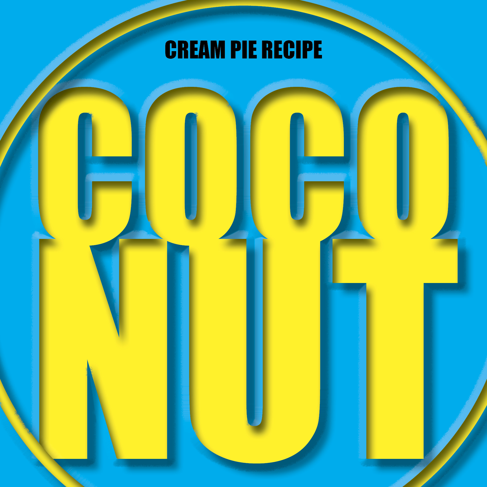
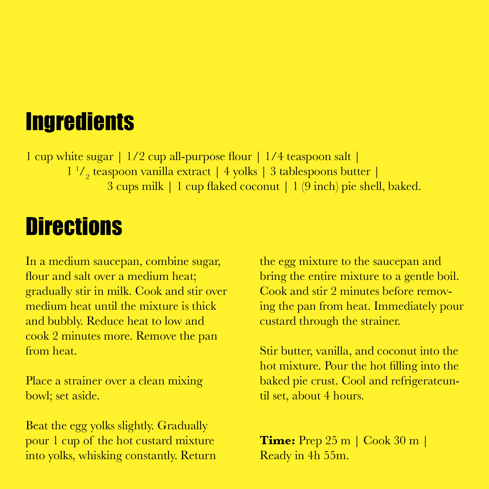
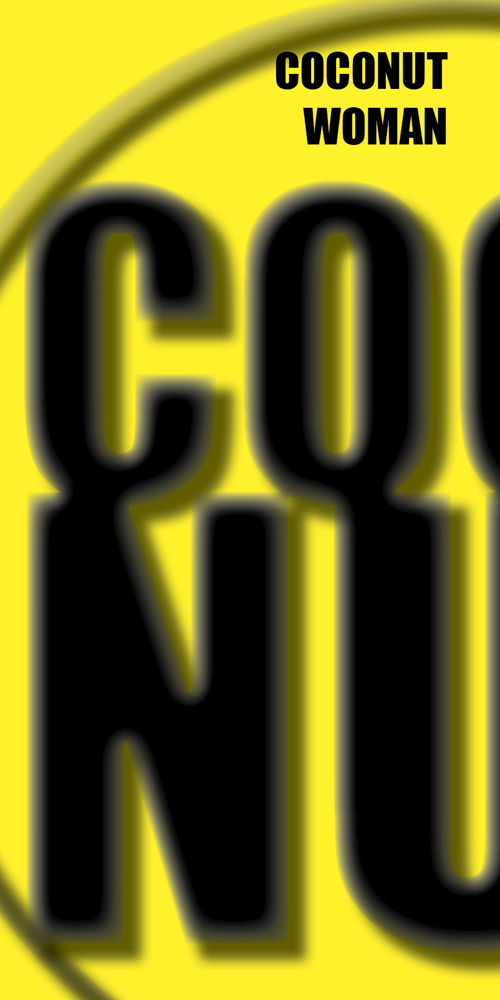
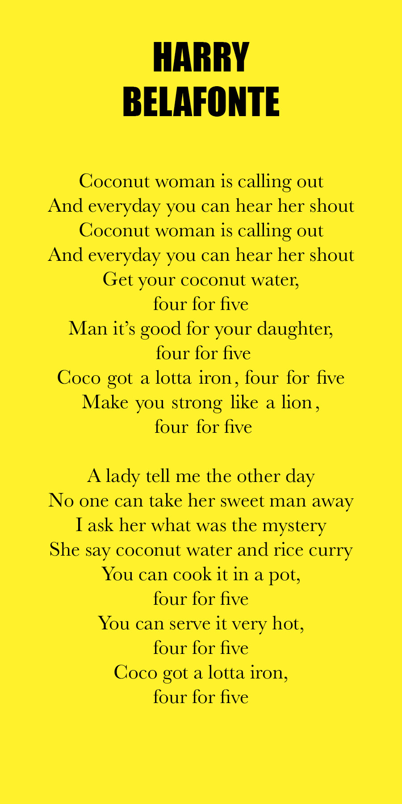
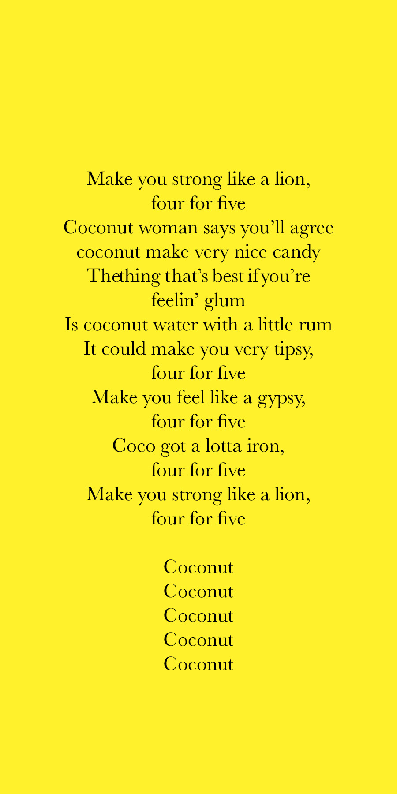
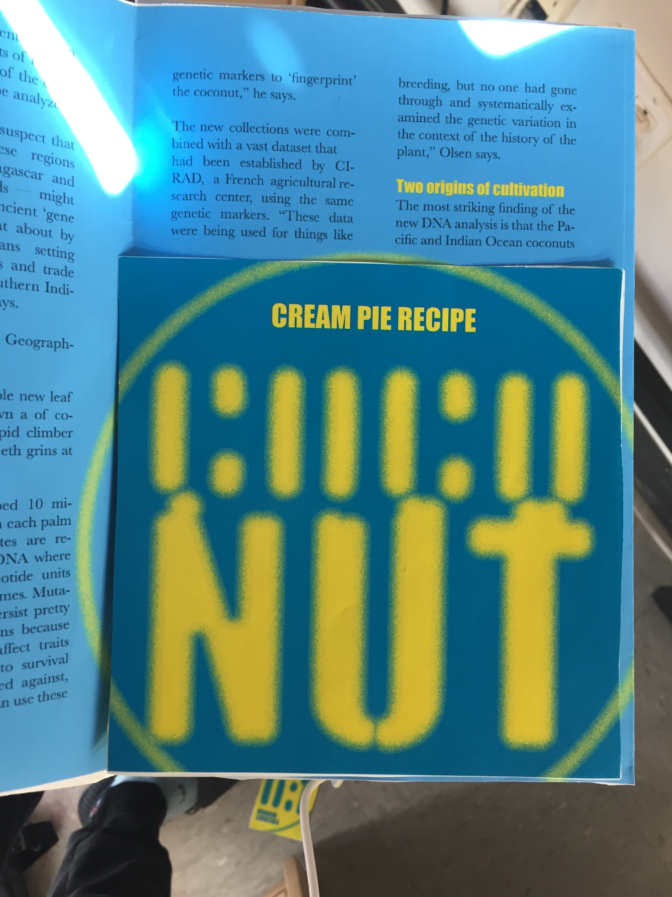
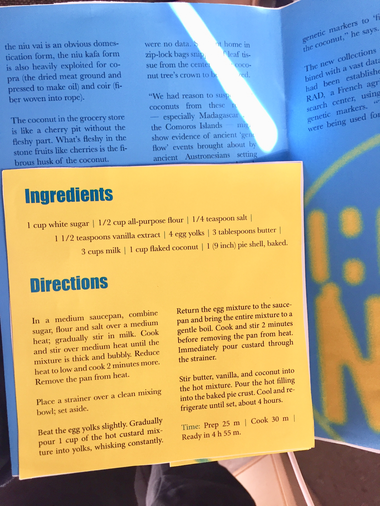
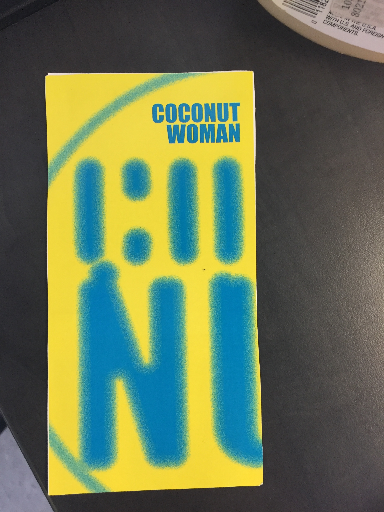

The prompt for this project was to design amd set type for three different forms of content about the same topic. In order to make the assignment interesting I chose a light-hearted topic; Coconuts.
This design is for an essay on the history of coconuts.
 This design is for a coconut pie recipe
  This design is for a song about coconuts
In order to take the idea further, I took insperation from the coconut. I decided to connect the three different contents physically. I made the largest content(the essay) become the outermost layer of the project, like the shell of a coconut. I then placed the second largest(the pie recipe)in the middle of the essay, like the meat of the coconut. Lastly the smallest content(the song) was placed underneath the recipie, like the water of the coconut. Here's a mock-up of how it turned out:
  